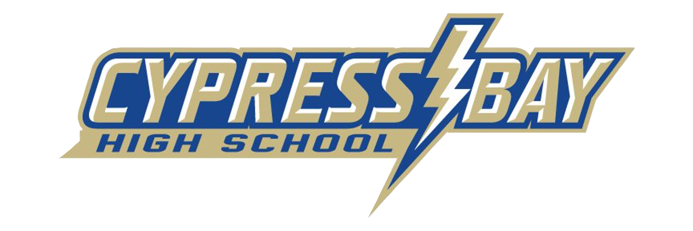

Top 5% of Class of 1200 Students, over 1000 hours of Community Service and 44 College Credits completed
Hover over a class to learn more
AICE Computer Science AS & A Level, AICE General Paper AS Level, AICE Spanish AS Level
AP Calculus AB, AP Calculus BC, AP Comparative Government, AP Computer Science A, AP Computer Science Principles, AP European History, AP Language and Composition, AP Literature and Composition, AP Macroeconomics, AP Microeconomics, AP Physics 1, AP Physics C: E&M, AP Physics C: ME, AP Spanish, AP United States History, AP United States Government
Palm Beach County Computer Science Competition 3rd place
Yearly FHSPS (Florida High School Programming Series) Participant
Yearly Master the Mainframe IBM Competition Participant - Part 1 early finisher all four years